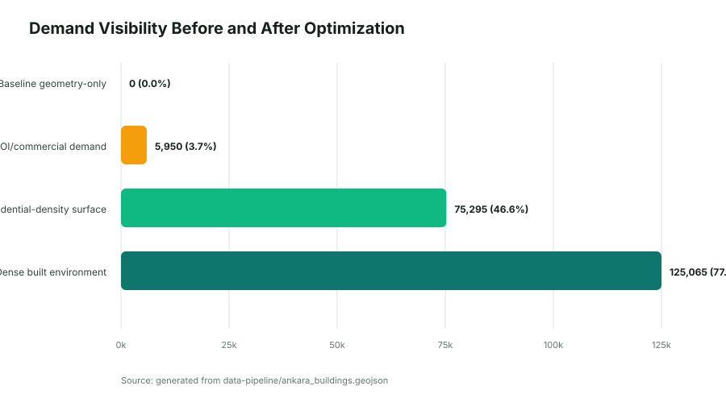
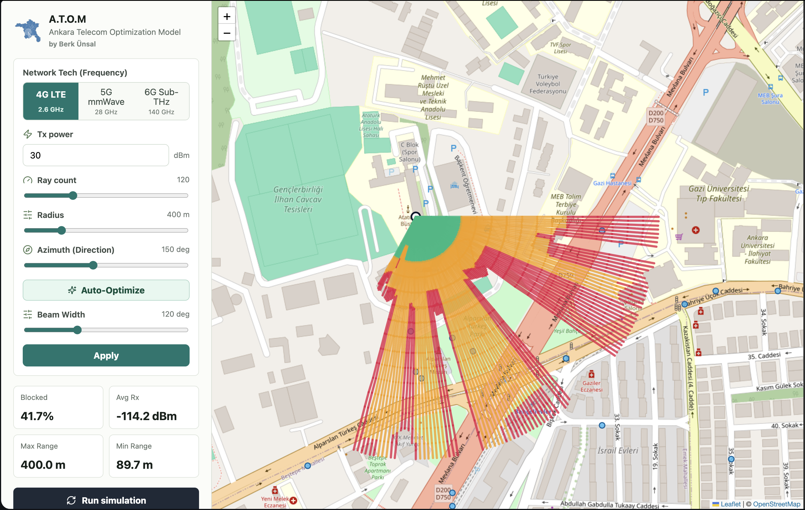
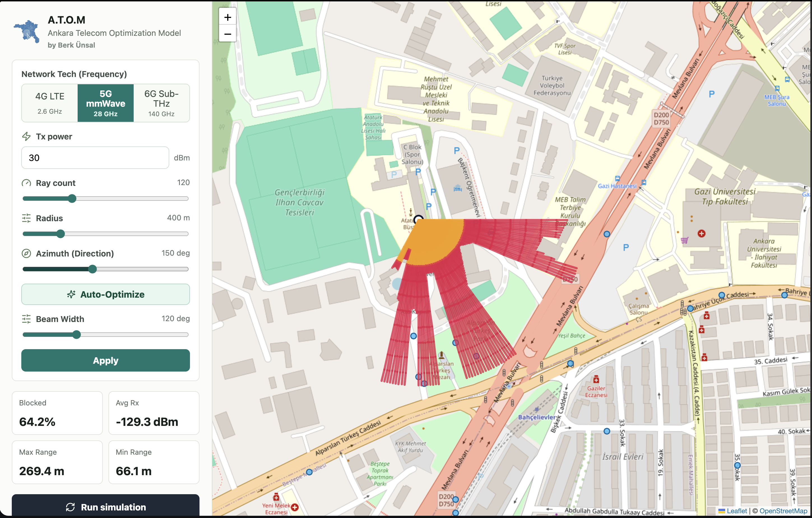
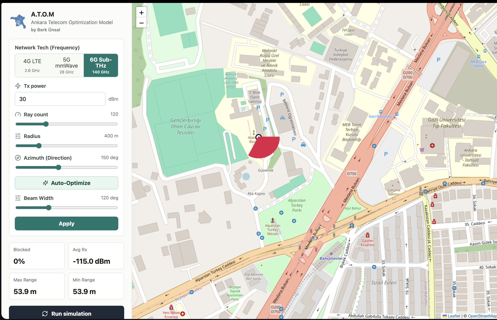
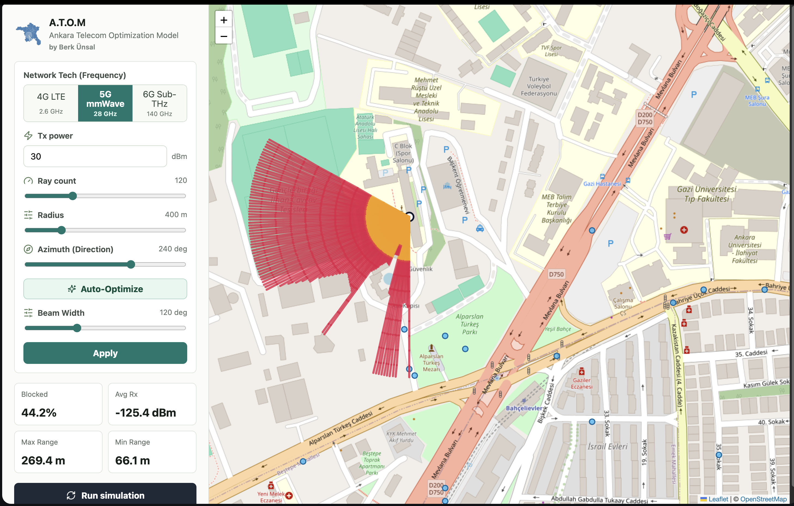

A.T.O.M
Ankara Telecom Optimization Model
A.T.O.M is a geospatial RF planning tool for comparing 4G LTE, 5G mmWave, and 6G Sub-THz propagation across Ankara. The docs in this folder explain the physics, the data flow, the Go backend, and the React map UI that turns raw tower and building data into readable coverage heatmaps.
Project overview
The system is built around a simple idea: load Ankara buildings and towers from local GeoJSON files, build an in-memory spatial index, and sweep a directional beam through the city to score signal coverage. The result is an engine that favors fast local computation over external dependencies, which keeps the app predictable and easy to run.
Local-first data
Buildings and towers are loaded at startup, then reused entirely in memory for fast simulation requests.
Directional simulation
Azimuth and beam width define a sector instead of a full 360 degree broadcast pattern.
Heatmap output
Ray segments are colored by signal strength so the map reads like an RF heatmap instead of a flat overlay.
Academic report
The academic report documents the full A.T.O.M engineering process: local datasets, RF model evolution, segmented ray tracing, demand-aware optimization, before/after analysis, and the charted evidence behind the final residential-density demand surface.
Before/after analysis
Compares geometry-only coverage, POI weighting, and the final residential-density optimizer.
Demand surface metrics
Explains how building metadata, residential signals, and local density became optimizer inputs.
RF model methodology
Summarizes FSPL, EIRP, receiver sensitivity, wall penetration, beamforming, and segmented rays.

Features at a glance
The markdown docs in this repository break the project down into a few consistent themes: multi-band physics, segmented ray tracing, beamforming, auto-optimization, and GeoJSON-based visualization.
Multi-generation physics
4G LTE, 5G mmWave, and 6G Sub-THz each use frequency-aware path loss behavior.
Frequency-dependent penetration
Lower bands penetrate more readily, while higher bands attenuate sharply at walls and rooftops.
Auto-optimize azimuth
Sector direction can be swept and scored automatically to maximize coverage area.
Architecture
The backend uses Go and Gin, the frontend uses React and Leaflet, and the data lives in local GeoJSON files. The server exposes a small set of API routes and serves the built frontend when available.
| Layer | Technology | Role |
|---|---|---|
| Backend | Go + Gin | HTTP API, simulation engine, optimization endpoint |
| Frontend | React + Leaflet | Controls, tower popups, ray overlays, stats panel |
| Data | GeoJSON files | Towers and building footprints loaded locally on startup |
| Deployment | Multi-stage Docker | Builds frontend and backend into one production image |
/healthz/api/towers/api/buildings/api/simulate/api/optimize-azimuthPropagation visualization
The screenshots below use the project assets already in the repository. They show how the same area changes as the network moves from 4G to 5G to 6G and then through automatic beam optimization.




Getting started
The easiest way to run the project is through Docker Compose. That keeps the frontend build, backend binary, and local geospatial files in one place.
docker compose up --build -d atom
For local development, the backend can be started with go run . inside backend-go/, and the frontend with npm run dev inside frontend-react/.
API reference
The backend keeps the request surface intentionally small. Simulate a sector, optimize the azimuth, and fetch the local tower and building GeoJSON.
| Method | Route | Purpose |
|---|---|---|
| GET | /healthz |
Liveness and data-loading status |
| GET | /api/towers |
Return tower locations as GeoJSON |
| GET | /api/buildings |
Return building footprints as GeoJSON |
| POST | /api/simulate |
Run the sector ray-tracing simulation |
| POST | /api/optimize-azimuth |
Sweep candidate azimuths and return the best one |
Deployment
The production setup uses a multi-stage Docker image. The final image contains the compiled Go server, the built React app, and the local geospatial assets needed at startup.
Frontend build
Node builds the React app into dist/.
Backend build
Go compiles a single binary that serves both the API and the static site.
Runtime image
Alpine keeps the production container lean and easy to ship.
FAQ
A.T.O.M is designed to run fully offline once the repository is available locally, and the Ankara dataset can be replaced with any other city as long as you provide equivalent building and tower GeoJSON files. The current simulator emphasizes fast deterministic coverage planning rather than full multipath or reflection-heavy RF modeling.
Can I use another city?
Yes. Swap the Ankara GeoJSON files for your own building footprints and tower points, then redeploy.
Does it need live APIs?
No. The backend loads static local data at startup and serves everything from memory.
Why no reflections?
The current model is tuned for responsive planning workflows, so it focuses on directional loss, obstruction, and penetration.
Contributing
The project is organized so backend RF logic, frontend map behavior, and static documentation can evolve independently. Good contributions usually stay scoped to one of those surfaces and keep the local-first deployment story intact.
Backend work
Simulation math, spatial indexing, path-loss logic, and API contracts live in the Go backend.
Frontend work
Leaflet layers, tower interactions, metrics, and control-panel UX live in the React app.
Docs work
Everything needed for GitHub Pages now lives inside docs/, including icons and screenshots.
Source markdown files
These markdown files remain the canonical source material, but the published navigation stays inside this single docs page so GitHub Pages never has to hop between mixed markdown and HTML routes.